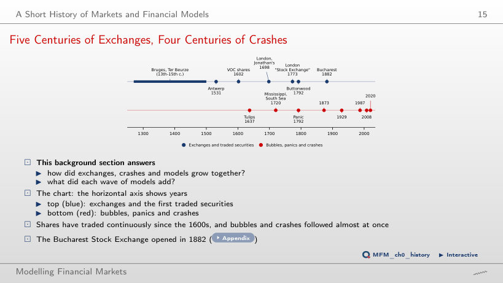
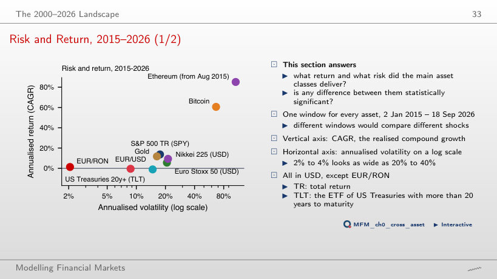
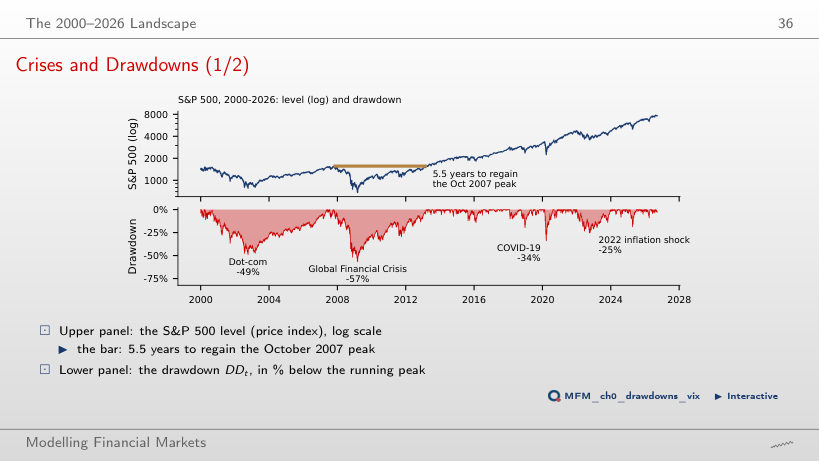
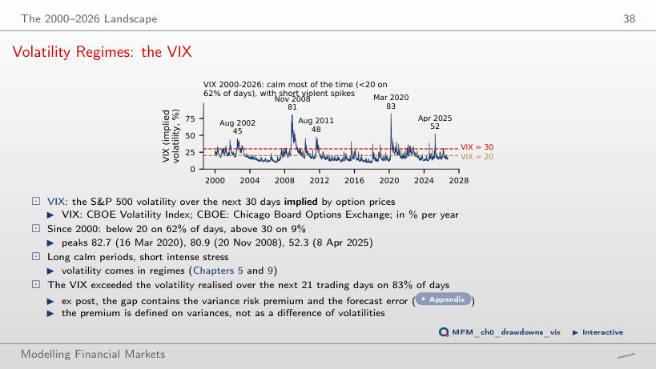
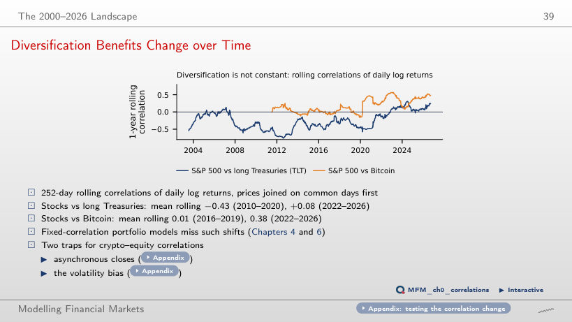
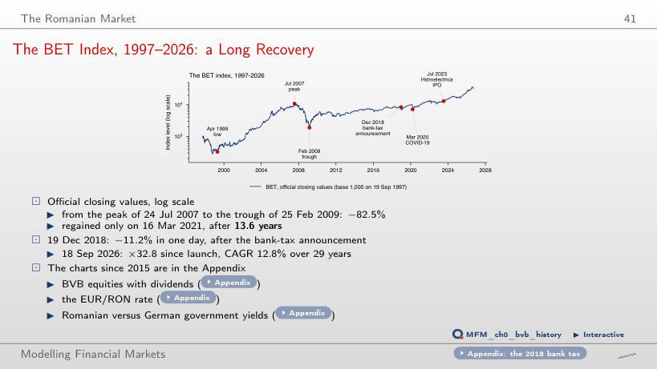
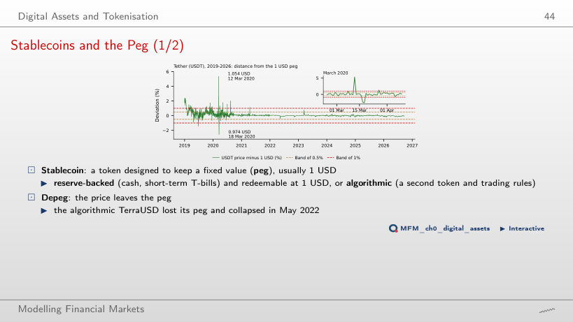
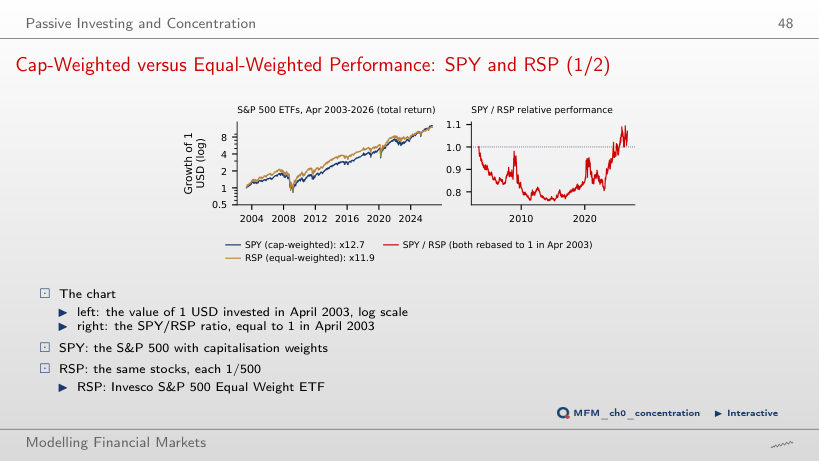
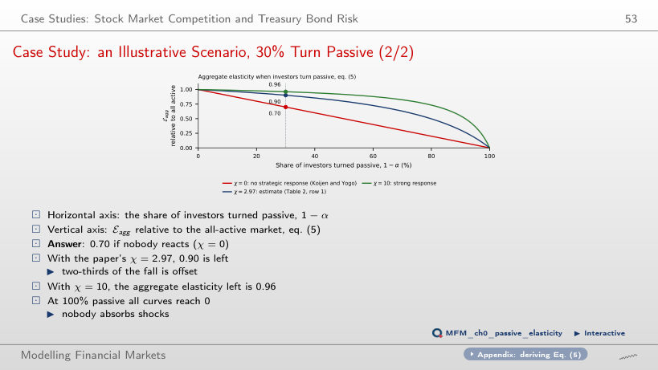
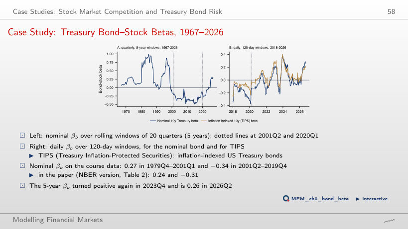

The slide of the lecture is on the left, the same figure on the right, computed in the browser from the same data. The ▶ button moves the parameter step by step.
A Short History of Markets and Financial Models · The 2000–2026 Landscape · The Romanian Market · Digital Assets and Tokenisation · Passive Investing and Concentration · Case Studies: Stock Market Competition and Treasury Bond Risk · AI for Scientific Discovery
A Short History of Markets and Financial Models
Five Centuries of Exchanges, Four Centuries of Crashes

Answer
Tulip mania, in 1637, 35 years after 1602. The Mississippi and South Sea bubbles occur in 1720, and the panic in 1792. The Bucharest Stock Exchange opened in 1882.
The 2000–2026 Landscape
Risk and Return, 2015–2026

Answer
We calculate t = 1.9/6.8 ≈ 0.28. We do not reject equal means; we do not establish that the means are equal. The test uses simple returns, not the difference between the plotted CAGRs (13.7% and 11.8%). For a single asset the standard error of the annualised mean return, σ/√Y with Y = 11.7 years, is 5.1 pp for the S&P 500 and 4.8 pp for gold. Under iid returns, with the same annual volatility and time span, more frequent sampling does not reduce the SE of the annualised mean.
Crises and Drawdowns

Answer
(1,565.15/676.53 − 1) × 100 = 131.3%. The 56.8% decline uses the peak as its base; recovery uses the trough. The final level is 231.3% of the trough, so the gain is 131.3%. The recovery took 5.5 years from the peak, until 28 March 2013.
Volatility Regimes: the VIX

Answer
45.4% of observations are below 17, and 51.4% are below 18. The required threshold is therefore 18. The median is 17.75; rounding it down does not give the required threshold. The mean, 19.79, is more sensitive to large extreme values. The VIX was below 20 on 62% of the days and at least 30 on 9%. The highest values are 82.7 on 16 March 2020, 80.9 on 20 November 2008 and 52.3 on 8 April 2025: calm periods are long, stress periods short and intense.
Diversification Benefits Change over Time

Answer
It stays close to zero: +0.10 with the 63-day window, +0.08 with 252 and −0.02 with 756, while the 2010–2020 mean stays between −0.42 and −0.44. The change does not come from the window: since 2022, TLT no longer gains, on average, on the days when stocks lose. Computed directly on each subperiod, the correlation is −0.47 and +0.11. The S&P 500–Bitcoin correlation rose from 0.01 (2016–2019) to 0.38 (2022–2026).
The Romanian Market
The BET Index, 1997–2026: a Long Recovery

Answer
13.6 years elapsed between the peak on 24 July 2007 and recovery on 16 March 2021. The index fell by 82.5% to the trough on 25 February 2009; the 12.1-year interval runs from this trough to the recovery. The 5.5-year interval refers to recovery of the S&P 500’s 2007 peak. Over the whole of 1997–2026 the BET grew 32.8 times, a CAGR of 12.8%.
Digital Assets and Tokenisation
Stablecoins and the Peg

Answer
The proportion is 93.0%. The 98% figure corresponds to the wider ±1% band; about 7% is the proportion outside the ±0.5% band. The calculation uses the available daily quotes and does not describe all intraday movements. The extreme deviations are from March 2020: 1.054 USD on 12 March and 0.974 USD on 18 March.
Passive Investing and Concentration
Cap-Weighted versus Equal-Weighted Performance: SPY and RSP

Answer
The final ratio becomes 1.396, approximately 1.40. The value 1.07 corresponds to an April 2003 start; 1.31 corresponds to a January 2023 start. Rebasing changes the final ratio because it changes the comparison base. The conclusion depends on the end date, though: the ratio, equal to 1 in April 2003, had fallen to 0.76 in April 2015, and the SPY advantage comes from the 31% rise of the ratio since January 2023. A higher realised return does not show an expected premium.
Case Studies: Stock Market Competition and Treasury Bond Risk
Case Study: an Illustrative Scenario, 30% Turn Passive

Answer
It falls from 1.00 (χ = 0) to 0.32 (χ = 2.97, the paper's estimate) and to 0.13 (χ = 10): active investors offset a growing part of each move to passive management. The pass-through rate is not the active share α. The aggregate elasticity left, eq. (5), is 0.70 with χ = 0, 0.90 with χ = 2.97, so two-thirds of the fall is offset, and 0.96 with χ = 10.
Case Study: Treasury Bond–Stock Betas, 1967–2026

Answer
The fitted change is (−0.34) × (−1 pp) = +0.34 pp. The negative sign (SE 0.06) indicates an opposite association during this subperiod; it does not guarantee a gain in every quarter with falling equities. The value 2.94 comes from incorrectly inverting the coefficient. In 1979Q4–2001Q1 the beta is 0.27. In 2020Q1–2026Q2 the nominal beta is 0.00 (SE 0.17) and the TIPS beta 0.19 (SE 0.13). On the daily returns of 2026 (up to 18 September) the nominal beta, 0.22, rises above the TIPS beta, 0.17; on the 120-day window of the chart the values on 18 September are 0.27 and 0.19.
AI for Scientific Discovery
EODHD daily prices up to 18 Sep 2026: indices, ETFs (adjusted prices), gold, Bitcoin, Ethereum, USDT; BET: official closing values. USD/EUR and JPY/USD rates from FRED, the BNR EUR/RON reference rate. Case studies: Haddad, Huebner and Loualiche (2025), eq. (5) and Table 2; Pflueger (2025), Figure 1, with the FRED yields DGS10, DFII10 and DTB3, the US market from the Kenneth French library and SPY.